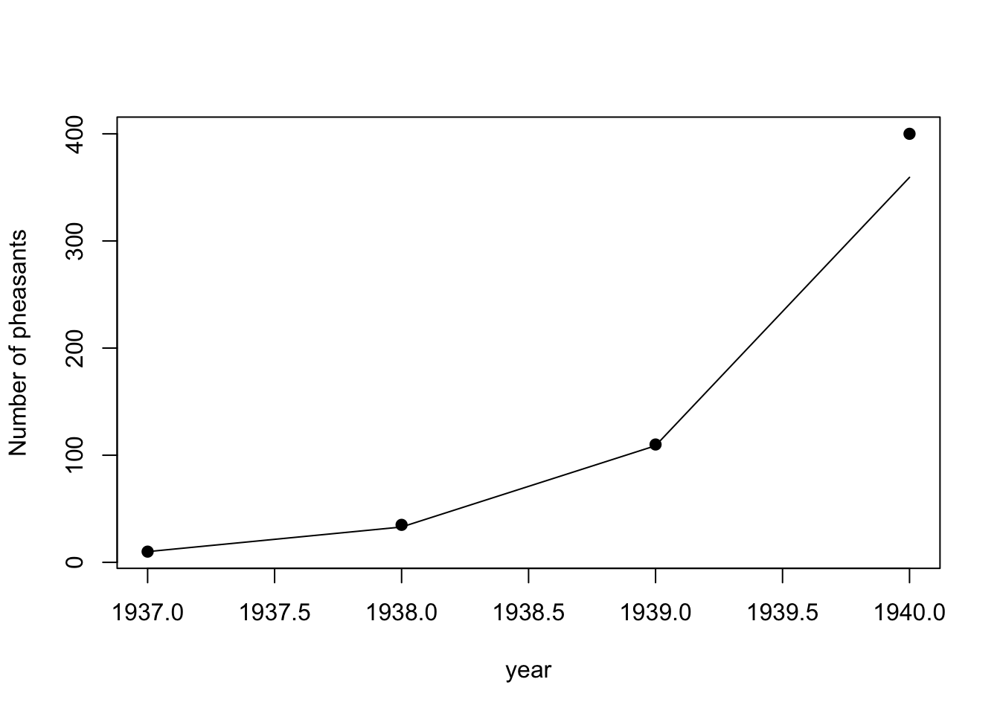
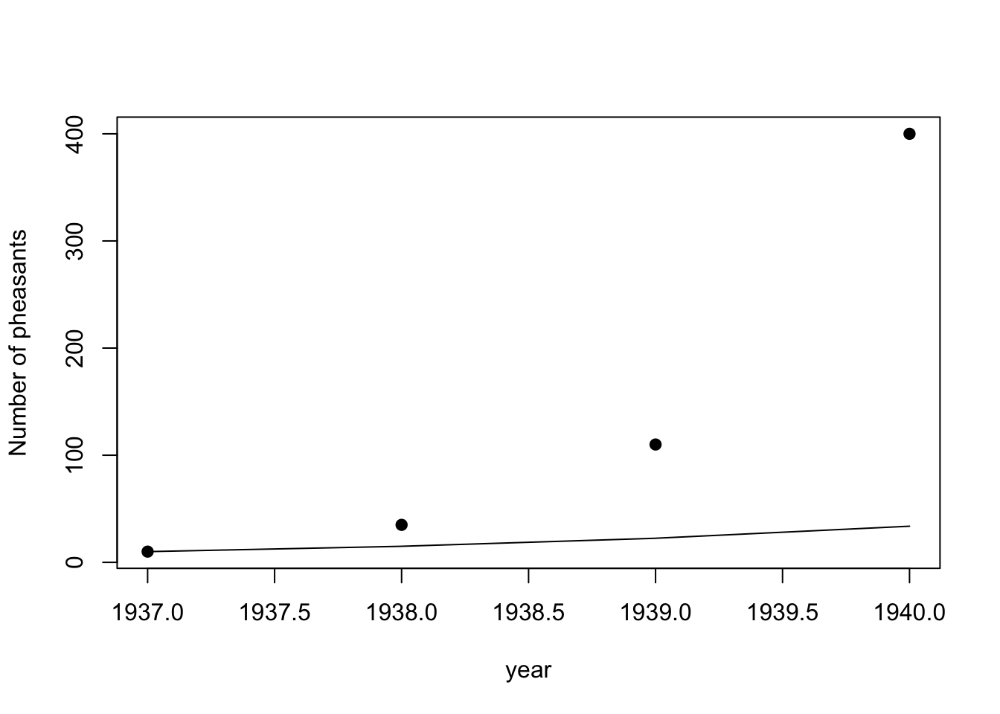

Chapter 6 Thurs Jan 20: LAB 1 - Introduction to R.
The deadline to submit your answers is Thurs Jan 27.
The goal of today’s lab is to make a graph similar to this graph;

Where the dots are the Protection Island data for the size of the population for different years, and the lines are the predicted population size if population growth is exponential and the geomteric growth rate is \(\lambda\).
Install R and R Studio on your computer. See here for instructions.
Read Finding your way around R Studio. Complete the EXERCISES. There are 2. [2 marks]
Read Introduction to R. Complete the EXERCISES. Where TRY IT appears - try it! Where HAND IN appears, add the answers to your answers (which could be a .R file or an .doc file). There are 6. [6 marks]
Read Getting R help.
Read Best practices. Neither 4. or 5. have marks assigned, they will just make working easier on future assignments.
Read 9.1 Handling data - Base R. Complete the TRY IT exercises.
Read 10 Making graphs in R. Complete the excerises HAND IN. There are 3. [3 marks]
8a. Now you are ready to make the graph at the top of the page. Making a new R Script and enter your name, title, and data following the Best practices. Make a data frame for the Protection Island pheasant population population sizes. If you’ve done it correctly it should be like this:
## time protection.island
## 1 1937 10
## 2 1938 35
## 3 1939 110
## 4 1940 400These are that data that will be the points in your plot. You could plot them now with plot(data$time, data$protection.island), but lets work on the line part next.
8b. Assign a value of to a variable lambda, i.e., lambda <- 1.5. Assign N0<-10. Make a sequence of the population sizes that would arise from exponential population growth and assign this sequence a variable name:
model <- c(N0*lambda^0, N0*lambda^1,N0*lambda^2,N0*lambda^3)Check the length of model using length(model) in your console. Is it the same as data$time? If so we can column bind:
data2 <- cbind(data,model=model)
data2## time protection.island model
## 1 1937 10 10.00
## 2 1938 35 15.00
## 3 1939 110 22.50
## 4 1940 400 33.758c. Now we can make our plot:
plot(data2$time, data2$protection.island, ylab = "Number of pheasants", xlab = "year", pch = 19)
lines(data2$time,data2$model)
Make sure you label your x- and y- axes as I have done in the code above. You will need to export your graph, paste it into Microsoft Word and write a figure caption: without a legend, you need to explain what the dots are lines are.
You must also hand in the R script that produces the graph - it will just be a few lines long. All of question 8 is worth [6 marks]